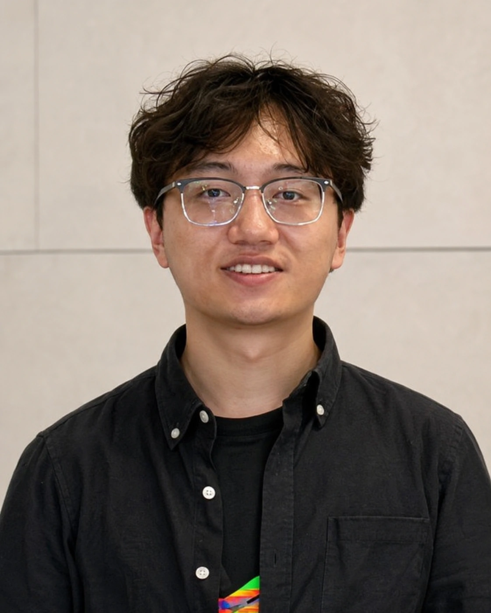
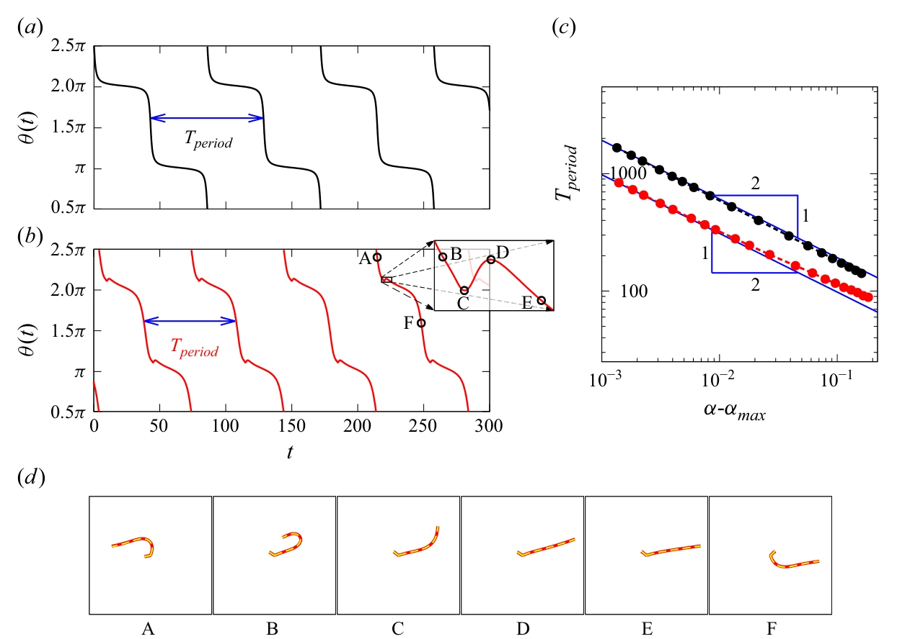
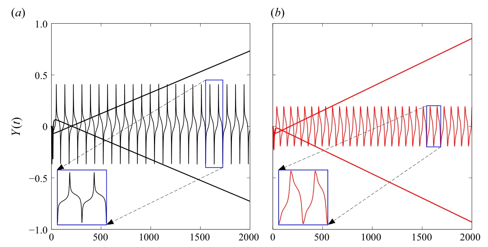

Fluid–structure interaction
How elastic fibres and particles move, deform and change stability when immersed in slow, viscous flows.
My research focuses on fluid mechanics and fluid–structure interaction, particularly the dynamics of flexible fibres and thin disks in Stokes flow. I use mathematical modelling and numerical simulations to investigate their motion, deformation, hydrodynamic interactions and stability.
PhD student supervised by Prof. Matthias Heil and Dr. Draga Pihler-Puzović.

My research sits at the intersection of fluid mechanics, solid mechanics and scientific computing.
How elastic fibres and particles move, deform and change stability when immersed in slow, viscous flows.
We develop mathematical models and numerical methods for problems in fluid and solid mechanics, using the open-source finite-element library oomph-lib.
Why do some flexible fibres rotate in a shear flow while others maintain a steady orientation? We show how fibre shape and elasticity control these two behaviours—and the transition between them.
Some elastic fibres keep a steady orientation and drift across streamlines. Others perform Jeffery-like rotations with no net cross-stream drift. The transition occurs through a degenerate SNIPER bifurcation, a result that extends to different fibre shapes.


Original Figures 10 and 11 from Ye, Pihler-Puzović & Heil (2026), Journal of Fluid Mechanics, 1040, A24. Reproduced from the open-access paper under CC BY 4.0; stored locally.
BMC–BAMC 2025 · University of Exeter · 24 June 2025 · Contributed talk
At the BMC–BAMC 2025 meeting at the University of Exeter, I presented recent work on elastic fibres in shear flow and steady orientations.
Participant · University of Cambridge, United Kingdom · 23–27 September 2024
Teaching Assistant · The University of Manchester
Department of Mathematics · 2024–present
I'm always happy to connect about mathematics and fluid mechanics.